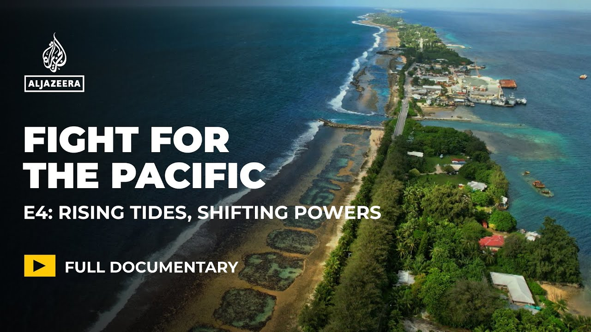

【太平洋地区的气候危机 | 专题纪录片】
Summary: The documentary explores the devastating impact of climate change on Pacific island communities, highlighting cultural erosion, land loss, and geopolitical struggles while emphasizing resilience and indigenous solutions.
摘要： 这部纪录片探讨了气候变化对太平洋岛屿社区的毁灭性影响，揭示了文化侵蚀、土地流失和地缘政治斗争，同时强调了韧性和本土解决方案的重要性。

⏱️ Estimated Reading Time: 26 min
📚 六级生词 📚 雅思生词 📚 托福生词 📚 专八生词 📚 SAT生词 📚 考研生词 📚 GRE生词 📚 高考生词
[Music] [Applause] [Music] [Music]
[音乐] [掌声] [音乐] [音乐]
I grew up with my grandmother from when I was two months all up till I was four years old.
我从两个月大一直到四岁，都是由祖母抚养长大的。
Uh so growing up in the village um upbringing is very simple.
在村庄里长大的经历非常简单。
Yeah, like I have the best childhood memories.
是的，我拥有最美好的童年回忆。
Uh this is exactly where we would play as well.
这里正是我们曾经玩耍的地方。
And at a young age, you're being taught about our way of life.
从小，我们就被教导关于我们的生活方式。
The sea is our home and the sea is our guardian.
大海是我们的家，也是我们的守护者。
I grew up um in that custom education.
我在这种传统教育中长大。
This means being surrounded by [Music] elders for Langa Langa.
这意味着被兰加兰加的长者们环绕。
Sea level rise is a major issue.
海平面上升是一个重大问题。
So in the last 20 years, we've lost 23 m of our land.
过去20年里，我们失去了23米的土地。
So during like king tide, like around Christmas time, the water will come into this whole area.
因此，在圣诞前后的特大潮期间，海水会淹没整个地区。
We no longer get to enjoy Christmas because Christmas is a time where we have to prepare ourselves for the king tides and king tides during that time just completely consume our land.
我们不再能享受圣诞节，因为那时我们必须为特大潮做准备，而潮水会彻底吞噬我们的土地。
We have dances here or festivities, but because of the high tide, the king tides, uh, a lot of them get cancelled.
我们这里有舞蹈和庆祝活动，但由于高潮和特大潮，许多活动被迫取消。
Uh, cuz water gets knee height in this area.
因为这里的水会涨到膝盖那么高。
As a community, the population's growing, but our islands getting narrower.
作为一个社区，人口在增长，但我们的岛屿却在缩小。
They say by the time I'm 65 um I won't have Lilysiana to call home anymore.
他们说，等我65岁时，我将不再有莉莉西亚娜这个地方可以称之为家。
Climate change is the biggest existential threat to the Pacific region.
气候变化是太平洋地区最大的生存威胁。
Pacific communities we contribute the least to the causes of climate change and yet we are at the forefront.
太平洋社区对气候变化的贡献最少，但我们却首当其冲。
The Pacific states have sit there for a long time.
太平洋国家已经存在了很长时间。
Their security interest is not in the traditional security space.
他们的安全利益不在传统的安全领域。
The security issues is in the issues of human security, climate change, uh sea level rise.
安全问题在于人类安全、气候变化和海平面上升。
These are the key issues that may fell fall by the wayside because there's so much focus on the geopolitics and the strategic aspect of things.
这些关键问题可能被忽视，因为人们过于关注地缘政治和战略层面。
I feel like the Pacific has always been treated like monopoly pieces.
我觉得太平洋地区一直被当作垄断游戏的棋子。
were cut up, given to the French, given to the Germans, given to the British, to the Americans.
被分割，交给法国人、德国人、英国人和美国人。
It's no different now with the climate crisis.
如今的气候危机也不例外。
China and America, even Australia, New Zealand, they're trying to get their claim on the Pacific.
中国、美国，甚至澳大利亚、新西兰，都在试图争夺太平洋地区。
And you watch everything that happens around climate change cuz I feel like that's just a new arena for them to trade and to buy new pieces.
你观察气候变化周围的一切，因为我觉得这只是他们交易和争夺的新舞台。
[Music] So just imagine like this church was the center of our village before.
[音乐] 想象一下，这座教堂曾经是我们村庄的中心。
Um so the houses would go out to where the boys have built their new lodge.
房屋会延伸到男孩们新建小屋的地方。
So for me, not only is the degradation of our physical landscapes, the alarming issue, it's the cultural erosion that comes with that.
对我来说，不仅是自然景观的退化令人担忧，随之而来的文化侵蚀同样严重。
Everyone is so preconditioned to think climate loss is cyclones, is drought, is flash floods, and that's physical loss.
人们总是习惯性地认为气候损失是飓风、干旱和洪水，这些都是物质损失。
But the cultural and spiritual loss is so under spoken and not focused on enough.
但文化和精神上的损失却很少被提及和关注。
Land is integral to a Pacific island person's existence.
土地是太平洋岛民生存的核心。
You know, because we have the understanding of land as being an ancestor and because there's that spiritual relationship between one's homeland, birthplace, place of death, right?
因为我们把土地视为祖先，并且与故土、出生地和死亡地有着精神上的联系。
The place where our ancestors are buried.
我们的祖先埋葬的地方。
The prospect of becoming uprooted is one that um causes a lot of anguish and pain.
被连根拔起的可能性带来了巨大的痛苦和悲伤。
This is our home.
这是我们的家。
Uh many want to be buried where their parents and their grandparents and so forth are buried as well.
许多人希望埋葬在他们的父母、祖父母等亲人安息的地方。
So this is the community uh graveyard.
所以这是社区的墓地。
So everyone gets buried here from our great greatgrandfathers.
从我们的曾曾祖父开始，每个人都埋葬在这里。
Yeah. Where I wanted to show you.
是的，这就是我想带你来看的地方。
Um it's a place I really care about.
这是一个我非常在意的地方。
Um but it's also a place that's Yeah. a dark reality or a very sad reality of what we're facing.
但这也是一个黑暗或悲伤的现实所在。
My greatgrandfather and some uncles, they're just somewhere under this buried here or our ancestors.
我的曾祖父和一些叔叔们就埋在这里的某个地方，和我们的祖先一起。
It's a special place where physically uh the linkage is strong.
这是一个特殊的地方，物质上的联系非常紧密。
Um but because of sea level rise um it's really hard to feel that sense of uh line your abua your blood um that strength that um comes with it to actually you know feel uh like it's disappearance is not by choice it's It's forced.
但由于海平面上升，很难感受到那种血脉相连的力量，它的消失不是自愿的，而是被迫的。
It doesn't feel right.
这感觉不对。
Some argue it's just land.
有人认为这只是土地。
You know, you can move and go rebuild your life somewhere else.
你可以搬到别处重建生活。
But the the soil or land that I sit on uh has been passed down through generations.
但我脚下的这片土地是世代相传的。
This is our identity.
这是我们的身份。
Because then without it then what are we?
因为如果没有它，我们算什么？
It also makes us vulnerable to the geopolitics because then we we are a people who will be needing assistance in 20 years time and I think some of these global powers know this and they're playing on that as well.
这也让我们在地缘政治中变得脆弱，因为20年后我们将需要援助，而一些全球大国知道这一点并利用这一点。
Whenever we have a disaster, cyclone and earthquake, it is these countries who run to our aid that makes us vulnerable.
每当我们遭遇灾难、飓风和地震时，正是这些国家跑来援助我们，让我们变得脆弱。
And is that weakening our position? Of course, it is.
这是否削弱了我们的地位？当然是。
Pacific states are already vulnerable as it is.
太平洋国家本身已经很脆弱。
They already have weak governance systems.
他们的治理体系薄弱。
In some of them, there's political instability.
一些国家存在政治不稳定。
There's leadership issues.
存在领导力问题。
There's a lot of aid coming into the region.
大量援助涌入该地区。
There's a question around effectiveness and then there's a question around capacity.
援助的效果和接受能力都存在问题。
Aid comes in all types of forms and it can be conditional or it can be unconditional.
援助形式多样，可以是有条件的，也可以是无条件的。
And if it's unconditional, you have to make sure it's given to the right projects.
如果是无条件的，必须确保用于正确的项目。
So it's used for education, it's used for poverty relief, it's used for climate change and adaptation.
用于教育、扶贫、气候变化和适应。
It's not good when the aid is used for the military.
如果援助用于军事，那就不好了。
You want the schools to be built with American money and Chinese money.
你希望学校用美国和中国的资金建造。
To me, that's a win-win situation.
对我来说，这是双赢的局面。
And then you let the schools alone and you let the Pacific people deliver their education.
然后让学校独立运作，让太平洋人民自己提供教育。
The legacy of the Pacific is one of neglect and then manipulation.
太平洋的历史是被忽视和操纵的历史。
And that is not sustainable.
这是不可持续的。
Joseph, sit down, please.
约瑟夫，请坐下。
We're not just reliant on outside countries.
我们不仅仅依赖外部国家。
Families are relying on family members overseas.
家庭依赖海外的家庭成员。
Can we eat? Yeah, you can start.
我们可以吃饭了吗？是的，可以开始了。
For Tonga, 44% of our GDP is remittance.
对汤加来说，44%的GDP来自汇款。
education uh I think is definitely uh the key for for for these young minds to to grow up and be whatever they want to be.
教育绝对是这些年轻人成长和实现梦想的关键。
My name is What do you want to be when you grow up? Vet because I like animals.
我的名字是……你长大后想做什么？兽医，因为我喜欢动物。
[Music] A lot of our teachers have left to go overseas.
[音乐] 许多老师已经离开去了海外。
It's not good news uh for for us to have all our teachers full.
这对我们来说不是好消息。
I know it has to do with the wages because if more people go, which I know they will, we won't have anyone here to to to to work to to develop our country.
我知道这与工资有关，因为如果更多人离开，我们就没有人在这里工作和建设国家。
There's a yeah lack of people here to to to to work.
这里确实缺乏劳动力。
Um and it's hard to find staff.
很难找到员工。
I think ordinary Tongan people just wants they don't I know they don't want to leave Tonga but they also want to get paid well enough to be able to take care of their family.
我认为普通的汤加人并不想离开汤加，但他们也希望获得足够的工资来养家。
What we're finding is that they governments are seeing a a labor shortage um because key people are finding it more uh advantageous to them to go than to stay in their own country and work.
我们发现政府面临劳动力短缺，因为关键人才认为离开比留在本国工作更有利。
Many local businesses are also suffering because they they don't have the workers.
许多本地企业也因缺乏工人而陷入困境。
they don't have the people who are working in the agricultural sector and sometimes that's you know a big part of an economy you know like in Tonga um so local businesses bon based on local enterprise are suffering
农业部门缺乏劳动力，而农业是经济的重要组成部分，因此本地企业受到严重影响。
we often talk about people's right to move you know the the rights of mobility but people also have a right to stay they have a right to stay home on their lands or or surrounded by their waters and in a way that their ancestors envisaged and in a way that they also want to envision for their future generations.
我们经常谈论人们的迁徙权，但人们也有权留在自己的土地上或水域中，以祖先设想的方式生活，并为后代规划未来。
I really hope one day that we'll have a a economy that can, you know, produce stuff here.
我真心希望有一天我们能拥有一个可以在这里生产的经济。
We're not a rich country, but we're rich in resources.
我们不是一个富裕的国家，但我们资源丰富。
Maybe start small and slowly build it to a point where Tonga can be independent and and and be able to develop and sustain itself.
也许从小规模开始，逐步建设，直到汤加能够独立、发展和自给自足。
There's this psalm once saying uh if a fool al the starfish that poisons is also the starfish that heals and so the proverb is a lesson in the solutions for our problems are within us.
有一句谚语说，毒害的海星也是治愈的海星，因此解决问题的办法在我们自己手中。
No one can come from the outside and solve those troubles.
没有人能从外部解决这些问题。
It must be solved from the inside.
必须从内部解决。
Pacific people are resilient and I believe they will be okay in the longer term.
太平洋人民坚韧不拔，我相信他们长期会好起来。
But there are a lot of challenges out there right now and building resilience in these communities where they are empowered both resource-wise, education wise, sovereignty wise, autonomywise are the tools that will get them to that sustainable place.
但目前存在许多挑战，建设社区的韧性，赋予他们在资源、教育、主权和自治方面的能力，是实现可持续发展的关键。
Searching, searching here and there.
四处寻找。
Turn around here and there.
四处转身。
Faith for me is just a a rootedness in something, an anchor and something that keeps me going.
对我来说，信仰是一种扎根于某物的感觉，是支撑我前进的锚。
Our people, we have this thing called mafana, which is a spirit of like warmth.
我们的人民有一种叫做“mafana”的精神，是一种温暖的感觉。
And I feel like Tongins are like that.
我觉得汤加人就是这样。
If we're around people who are um passionate about something, that mafana, that sense of warmth comes out and we go above and beyond for something.
如果我们周围有人对某事充满热情，那种温暖的感觉就会涌现，我们会为此付出更多。
I just want to encourage my fellow tonggins for us to come together, especially us in the business sector and really talking about where we can move or how we can move um forward in regards to development and sustainability.
我想鼓励我的汤加同胞团结起来，尤其是商界人士，共同探讨如何在发展和可持续性方面前进。
We're at our family shop.
我们在自家的商店里。
We sell uh groceries, meats, uh pig feed, chicken feed, and we also have a little ery.
我们出售杂货、肉类、猪饲料、鸡饲料，还有一个小型乳品店。
Family is very it's foundational.
家庭是基础。
Like there's no running away from family.
无法逃离家庭。
It's very tightknit.
关系非常紧密。
It's just great to work with with my dad.
和父亲一起工作很棒。
[Music] I'm trying to get her to follow my uh footstep because uh I follow my parents uh footstep.
[音乐] 我试图让她跟随我的脚步，因为我跟随了我父母的脚步。
I don't come from a business background.
我没有商业背景。
So, it's all just watching and learning.
所以一切都是观察和学习。
It's very much like him growing up.
这很像他成长的方式。
Now, we're in a phase where we're getting mostly Chinese business people coming in.
现在，我们正处于一个阶段，大部分是中国商人进入。
I think there are some people especially in the small business sector who don't like the new Chinese that have come in primarily because they've been able to sort of access supply chains from China which undercuts local small businesses especially in the in in you know in the little shops.
我认为一些小企业主不喜欢新来的中国商人，主要是因为他们能够从中国获取供应链，从而削弱了本地小企业，尤其是小商店。
There's a lot of competition in this field of um let's say groceries.
在杂货领域竞争非常激烈。
He lost a lot of the customers that he used to have before.
他失去了许多以前的客户。
It wouldn't be wise to continue down this road, but rather focus on our strengths which is in the chicken farm.
继续走这条路不明智，我们应该专注于我们的优势——养鸡场。
Our contract to be here in the store will be end December next year.
我们在商店的合同将于明年12月到期。
We were thinking maybe um it will be better to move to the farm and then just run the farm.
我们在考虑或许搬到农场并专注于经营农场会更好。
I love it because, you know, I grew up in it and um I think I remember my father started the business when I was 2 years old.
我喜欢它，因为我在这里长大，我记得父亲在我2岁时创办了这个生意。
So that's why and I love chicken.
这就是原因，而且我喜欢鸡。
This uh 3,500 cheeks.
这3500只鸡。
[Music] I think uh maybe I'm the longest person to do Breen and I there's few other Tongan farmers.
[音乐] 我想我可能是养鸡时间最长的汤加农民之一。
So we just need to extend our farm and then we employ more Tongan [Music] people.
我们只需要扩大农场，然后雇佣更多汤加人。
Tongan people um they rather go for the local eggs.
汤加人更喜欢本地鸡蛋。
there's more of the awareness to support local locally made products.
人们更倾向于支持本地产品。
So I think that now is the best time to build up on these businesses because the people's mindset has changed and I think that comes with this generation.
因此，我认为现在是发展这些业务的最佳时机，因为人们的观念已经改变，这是这一代人的特点。
We shouldn't need to import eggs anymore because there's four other um tongen farms and they're supporting each other.
我们不应该再需要进口鸡蛋，因为有其他四家汤加农场互相支持。
So it would be good to build all of those.
因此建造所有这些设施会很好。
I think like we become then just too dependent on like let's say aid or whatever it is.
我认为我们会变得过于依赖外援之类的东西。
Strengthening businesses will then have choice to say yes or no cuz right now we don't.
加强商业发展才能让我们有选择权，因为现在我们没有。
So we have to say yes to a lot of outside help but then in the end we become indebted and find ourselves in really difficult situations.
所以我们不得不接受大量外部援助，但最终会负债累累陷入困境。
We just need to be reminded that we can do it and try to build up not just our country but our economy um for ourselves and for the next generation.
我们需要被提醒：我们能做到，要为自己和下一代建设国家和经济。
The influx of foreign aid that's coming through to the country is none like our people has experienced before.
当前涌入我国的外援规模是民众前所未见的。
Foreign aid or aid dependency is growing at an alarming rate amongst our people.
我国民众对外援的依赖正以惊人速度增长。
That dependency continues to just disconnect us from who we truly are.
这种依赖正使我们逐渐迷失真正的自我。
It's really time that you know Pacific our leaders actually step up and um otherwise we'll be you know subjecting our own powers to the hands of others who don't care about our customs who don't care about our land or our sea.
现在正是太平洋领导人挺身而出的时候，否则我们将把权力交给那些不尊重我们文化、土地和海洋的外人。
Bye-bye.
再见。
I truly believe uh we can empower our people uh for social change.
我坚信我们能赋予民众推动社会变革的力量。
Um so that's why I started Custom Keepers.
因此我创立了"传统守护者"。
We're an organization that works with communities to revitalize and preserve our depleting traditional knowledge and cultural heritage.
我们通过与社区合作来复兴濒危的传统知识和文化遗产。
We're not only building the future generation to be custom keepers, our knowledge holders, uh, but we're also navigating ways in which our traditional knowledge can help us to adapt and mitigate the climate crisis at our shores.
我们不仅培养年轻一代成为知识传承者，更探索如何用传统智慧应对沿岸气候危机。
I think we're all clinging to hope.
我认为我们都紧握着希望。
If you can't enter into this space with with that optimism, then there's really no point and we're not ready to give up.
若没有乐观精神，这一切就毫无意义——而我们绝不放弃。
Sounds utopian and flowery, but it's like it's real.
听起来像乌托邦幻想，但这就是现实。
We just kind of have this faith that we're going to figure it out together.
我们坚信能共同找到解决方案。
We have to.
我们必须做到。
We're restoring our traditional custom house.
我们正在修复传统议事厅。
Uh in our language, we call that a fifi.
用我们语言称为"菲菲"。
These traditional fifi were desecrated during colonization.
这些传统菲菲在殖民时期遭到亵渎。
they were vital for uh passing down of knowledge and uh customary practices.
它们曾是传承知识和习俗的重要场所。
So the firefire will mainly be where the chiefs can make decisions.
修复后的菲菲将是酋长们议事的场所。
Um and it'll also be that learning space where young people and elders come together.
也将成为年轻人与长者共同学习的空间。
We believe that without cultural resilience, there's no climate resilience.
我们相信没有文化韧性就没有气候韧性。
As much as foreign aid or other governments would want to come and tell us how to fix and how to adapt to the climate crisis, it will only be the solutions that we know will work for our villages that can work.
尽管外援方试图指导我们应对气候危机，但只有适合我们村庄的方案才真正有效。
And it's because of this that we have always been resilient.
正因如此我们始终坚韧不拔。
It's literally a symbol of showing that, you know, we're going to fight whatever way possible.
这象征着我们将竭尽全力抗争。
Uh we're going to fight together.
我们将并肩作战。
We are here at the Miss Sam pageants.
我们正在萨摩亚小姐选美现场。
Today's the float day.
今天是花车巡游日。
Yeah.
是的。
Beautiful display of Sam culture, of who we are, everything.
精彩展现了萨摩亚文化与我们的一切。
Sam Matalasi.
萨摩亚·马塔拉西。
I will push back against the idea that, you know, we're just a vulnerable country who's who's going to be subjected and pushed around and kicked around like a soccer ball um in the arena of international politics.
我反对将我们视为国际政治中被随意摆布的弱势国家。
We have to be more innovative around our diplomacy.
我们的外交需要更多创新。
And I think, you know, smons are very capable of being able to achieve a lot on the world stage with very little.
我相信萨摩亚人能用有限资源在国际舞台取得成就。
We don't have the money.
我们没有资金。
We don't have the resources.
缺乏资源。
But we we want to see our people developing themselves.
但我们希望人民能自我发展。
We want to see our government um coming up with ideas and and ways where people can actually makes make money because at the end of the day, it's about money.
期待政府提出切实可行的创收方案，毕竟经济是根本。
There's certain things that I want to see improve in my own country.
我希望祖国能在某些方面进步。
Political leadership is the key.
政治领导力是关键。
If we get the wrong leaders, bof, we in trouble big time.
若选错领导人，我们将陷入大麻烦。
The political leadership are the ones forgetting why are they in there in the first place.
有些政界领袖忘记了初心。
That is to grow your economy and leave legacies for our children.
本应发展经济并为后代留下遗产。
There's a very strong colonial legacy in the Pacific.
太平洋地区殖民遗毒深重。
Whether it's the Americans, whether it's the French, whether it's the British, whether it's the Australians, or whether it's the Kiwis, there has been decades of others telling the Pacific people how they should behave.
无论美法英澳新，数十年来都在对太平洋民众指手画脚。
It's all about hearing the Pacific voice so that the Pacific people can determine their own future.
必须倾听太平洋声音，让民众自主决定未来。
Yes, the the answers sit within our ancestral knowledge, but there's a caveat to that, right?
虽然答案藏在祖先智慧中，但需注意：
I actually would like those groups to look at coloniality before they look at indigenous knowledge.
希望相关团体先审视殖民问题再研究原住民知识。
Otherwise it will be just another site of extraction but it will be extraction from indigenous knowledge systems.
否则只是换了个角度剥削原住民知识体系。
Indigenous peoples carry the solutions but this needs to come handinhand with indigenous political liberation in the Pacific.
原住民掌握解决方案，但需与太平洋地区政治解放同步推进。
You're really fighting for the values that make that island community, that nation what it is and what what makes it unique.
我们捍卫的是岛国社区的独特价值。
Um you're fighting for the beauty that it brings to the world.
守护它带给世界的美丽。
you know that it's valuable and you want to protect it.
明白其珍贵并全力保护。
My hopes and aspirations obviously we are in a world that's developing and changing as we go.
我的希望是：在这个剧变的世界里，
I want us to maintain our culture and I want our children to grow up and their children's children to have land and still keep this beautiful place that they call home.
能传承文化，让子孙后代保有这片美丽的家园。
I feel hopeful.
我充满希望。
I believe in radical hope.
我相信根本性的希望。
Like there's so many young people in Samoa defying odds.
萨摩亚有许多逆势而行的年轻人。
You won't see them on the newspaper.
他们不上报纸。
They won't be a contestant for Miss Samoa.
不参加选美比赛。
They're not speaking at the UN, but they're in their villages.
不在联合国发言，但扎根村庄。
They're rep planting coral.
他们移植珊瑚。
They're creating youth programs for education.
创办青年教育项目。
Their projects will be the innov like innovation that will be protecting our seaw walls, protecting our land.
他们的创新将守护海堤和土地。
They will be the activists pulling out governments and they give me hope.
这些未来的政府监督者让我看到希望。
[Music]
[音乐]